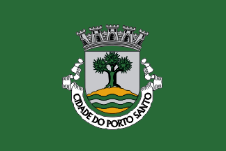

PORTUGALIA
Portugalia, Republika Portugalska (port. Portugal, wym. [puɾtuˈɣaɫ]; oficjalna nazwa República Portuguesa) – państwo europejskie położone w zachodniej części Europy Południowej na południowym zachodzie Półwyspu Iberyjskiego. Jest najdalej wysuniętym na zachód państwem Europy, od północy i wschodu graniczy z Hiszpanią, a od zachodu i południa Portugalię oblewają wody Oceanu Atlantyckiego. Dodatkowo w skład Portugalii wchodzą dwa archipelagi wysp położonych na Oceanie Atlantyckim – Azory i Madera. Jest członkiem Unii Europejskiej oraz NATO.
AZORY
Azory (port. Açores, wym. [ɐˈsoɾɨʃ]; Arquipélago dos Açores), administracyjnie Region Autonomiczny Azorów – archipelag dziewięciu wysp wulkanicznych należących do Portugalii, położony w środkowej części Oceanu Atlantyckiego, na Grzbiecie Śródatlantyckim. Znajduje się około 1500 km od wybrzeży Półwyspu Iberyjskiego i jest zaliczany do Makaronezji. Na długości 650 km rozciągają się trzy główne grupy wysp (grupa zachodnia: Flores i Corvo, grupa centralna: Faial, Pico, São Jorge, Graciosa i Terceira, grupa wschodnia: São Miguel i Santa Maria). Zróżnicowana rzeźba terenu ze stromymi, skalistymi wybrzeżami i jeziorami kraterowymi świadczy o wulkanicznym pochodzeniu wysp. Archipelag jest nadal obszarem aktywnym sejsmicznie.
Powierzchnia wysp – około 2346 km2 (największa São Miguel – 744,55 km2), liczba mieszkańców – 246,75 tys. (2011). Ośrodek administracyjny: Ponta Delgada. Od roku 1976 mieszkańcy wyspy cieszą się częściową autonomią, poszerzoną w 1980.
Wyspy, znane w starożytności Fenicjanom, zostały ponownie odkryte w 1427 roku przez Portugalczyków, którzy przeprowadzili szybką kolonizację niezamieszkanego wcześniej archipelagu. Od czasów II wojny światowej działa tutaj amerykańska baza lotnicza i morska.
MADERA
Madera (port. Madeira), oficjalnie Region Autonomiczny Madery (port. Região Autónoma da Madeira) – portugalski region autonomiczny na wyspach Oceanu Atlantyckiego.
Zaliczany do Makaronezji, archipelag Madery ma pochodzenie wulkaniczne. Znajduje się na Oceanie Atlantyckim u północnych wybrzeży Afryki. Leży 860 km na południowy zachód od kontynentalnej Portugalii oraz ok. 450 km na północ od hiszpańskich Wysp Kanaryjskich. Obejmuje trzy grupy wysp: Madera (741 km2) z położoną przy jej wschodnim cyplu wysepką Vermela Fora, Porto Santo (42,5 km2; na północny wschód od Madery) otoczoną grupą mniejszych wysp (m.in. Baixo, Ferro, Fora, Cima) oraz grupę trzech niezamieszkanych pustynnych wysp Ilhas Desertas (na południowy wschód od Madery).
- łączna powierzchnia wysp: 801 km2
- liczba mieszkańców: 246 689 (2007)
- główne miasto: Funchal
Maderski spacer nad chmurami
PORTO SANTO
Porto Santo – wyspa w archipelagu Madery, zaliczanym do Makaronezji. Należy do Portugalii. Wyspa jest zamieszkana, jej głównym miastem jest Vila Baleira. Obszar wyspy to 42,5 km2, leży ona 43 km na północny wschód od Madery.